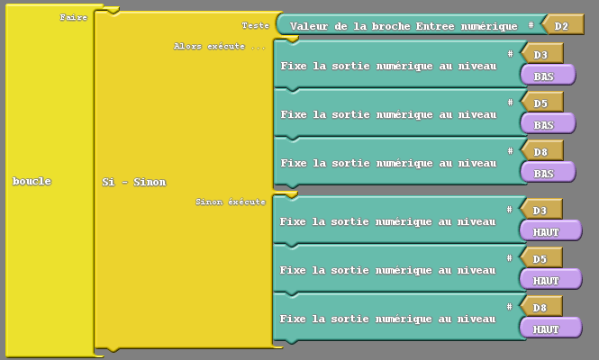
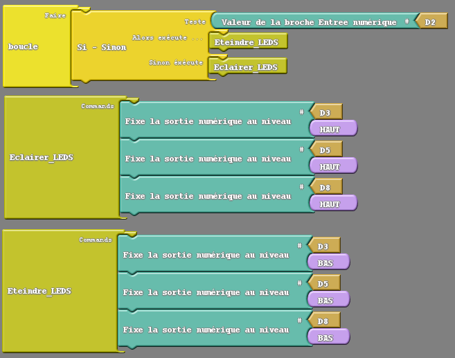

|
ACTIVITĒ 2 |

Exercices sur l'utilisation des Boutons Poussoirs
Exercice 2A
Objectif
Éclairer les 3 LEDs lorsque le bouton poussoir rouge est enfoncé. Quand il est relâché les 3 LEDs s'éteignent.
Réaliser le programme ArduBlock ci-dessous : (les boutons fonctionnent ainsi : non appuyé niveau logique 1, appuyé niveau :
logique 0)

Enregistrer le programme ArduBlock sous le nom Exercice2A_votrenomdegroupe.
Transférer le programme et vérifier qu'il fonctionne correctement.
Questions à répondre sur copie pour l'Exercice 2A.
Q5) En regardant le programme en C généré, identifier les instructions et les éléments en langage C :
- qui correspondent à la fonction « Si-Sinon », et
- qui permettent de lire l'état du bouton poussoir.
Q6) Expliquer le rôle et le paramétrage des instructions suivantes :
a) If ... Else
b) digitalRead()
Pour comprendre ces instructions et les commenter, vous pouvez consulter le guide de référence du langage Arduino.
Exercice 2B
Objectif
Éclairer les 3 LEDs avec le bouton poussoir rouge.
Éteindre les 3 LEDs avec le bouton poussoir vert.
Les 3 LEDs restent éclairées jusqu'à ce que le bouton poussoir vert soit enfoncé.
Les 3 LEDs restent éteintes jusqu'à ce que le bouton poussoir rouge soit enfoncé.
Modifier le programme ArduBlock précédent.
Enregistrer le programme ArduBlock sous le nom Exercice2B_votrenomdegroupe.
Transférer le programme et vérifier qu'il fonctionne correctement.
Questions à répondre sur copie pour l'Exercice 2B.
Q7) En regardant le programme en C généré, identifier l'instruction et les éléments en langage C qui correspondent à la structure « Si ».
Q8) Expliquer la différence avec la précédente structure « Si-Sinon ».
Q9) Quelle pourra être l'utilité de cette structure "Si" ?
Pour comprendre cette instruction et la commenter, vous pouvez consulter le guide de référence du langage Arduino.
Q10) Donner la liste des opérateurs de comparaison et des opérateurs booléens que l'on pourra utiliser pour écrire des conditions.
Exercice 2C
Objectif
Simplifier l'écriture du programme ArduBlock Exercice2A en utilisant deux « subroutines ».
Une première que l'on nommera « Eclairer_leds » et la seconde que l'on nommera « Eteindre_leds ».
Réaliser le programme ArduBlock ci-dessous :

Consignes sur l'élaboration du programme ArduBlock
o Insérer le bloc depuis le menu « Contrôles ».
o Faire glisser les 3 blocs de LEDs éclairées.
o Modifier le nom « sous-programme » par « Eclairer_leds » en cliquant sur le texte.
o Insérer un autre bloc depuis le menu « Contrôles ».
o Faire glisser les 3 blocs de leds éteintes.
o Modifier le nom « sous-programme » par « Eteindre_leds » en cliquant sur le texte.
o Dans le programme principal insérer deux blocs depuis le menu « Contrôles ».
o Modifier les noms pour obtenir les fonctions : « Eclairer_leds » et « Eteindre_leds ».
Enregistrer le programme ArduBlock sous le nom Exercice2C_votrenomdegroupe.
Transférer le programme et vérifier qu'il fonctionne correctement.
Questions à répondre sur copie pour l'Exercice 2C.
Q11) En regardant le programme en C généré, identifier comment les blocs « sous-programme » sont-ils codés dans le programme en C.
Q12) Expliquer leur positionnement dans la structure du programme.
Q13) Quelle est l'utilité des fonctions ?
Pour comprendre les fonctions et les commenter, vous pouvez consulter le guide de référence du langage Arduino.
Exercice 2D
Objectif
Réaliser le programme ArduBlock permettant d'effectuer les séquences suivantes :
Au début toutes les 3 LEDs sont éteintes.
Si on appuie sur le bouton poussoir rouge les 3 LEDs s'éclairent en effectuant un chenillard (Rouge-verte-jaune-rouge-verte-jaune...) avec une durée d'éclairement 0,3 seconde.
Le chenillard continu indéfiniment si le bouton poussoir rouge est relâché et tant qu'aucune autre action n'est déclenché par le bouton poussoir vert.
Si on appuie sur le bouton poussoir vert les 3 LEDs clignotent (0,5 seconde) en continu et indéfiniment même si le bouton poussoir vert est relâché et tant qu'aucune autre action n'est déclenché par le bouton poussoir rouge.
Utiliser les travaux des précédents exercices sur les leds (Activité 1) et les boutons poussoirs (Activité 2).
Utiliser deux "sous-programme " pour les actions telles que : le chenillard, et le clignotement des LEDs.
Il faudra utiliser deux structures "Si" et une structure "Tant que".
Enregistrer le programme ArduBlock sous le nom Exercice2D_votrenomdegroupe.
Vérifier qu'il fonctionne correctement.
Fin de l'activité 2 sur l'utilisation des boutons poussoirs, vous pouvez passer à l'activité suivante : Activité 3 sur l'utilisation du Buzzer.
Créé avec HelpNDoc Personal Edition: Outils facile d'utilisation pour créer des aides HTML et des sites web